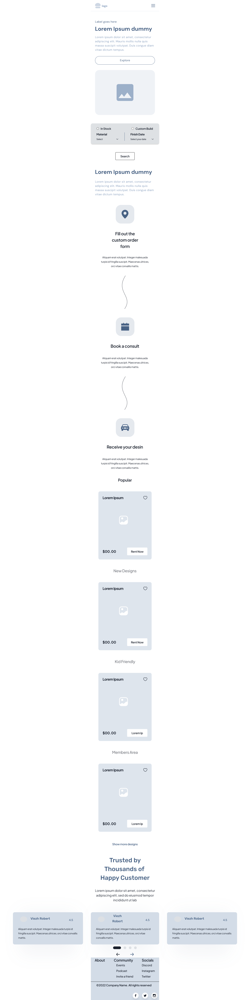
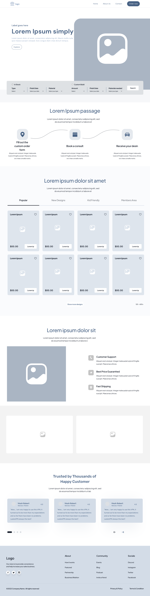
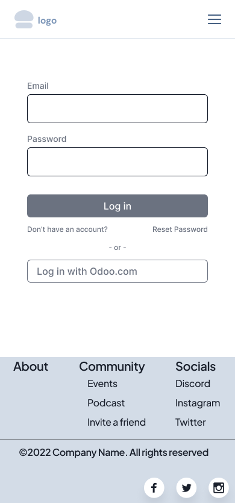
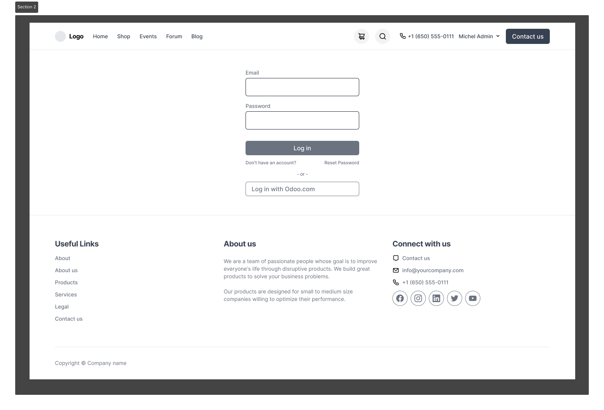
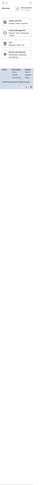
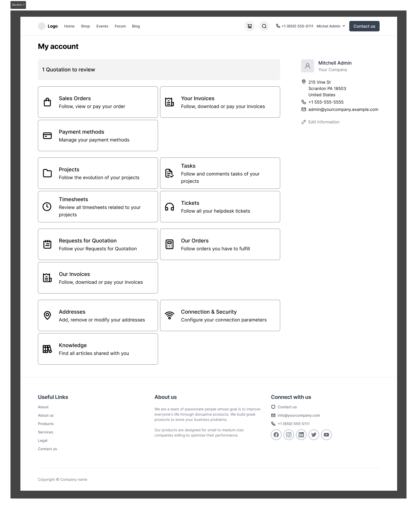

1. Site Name
My Site's Name: KynesDesign
Reason for Selection: I chose the name 'KynesDesign' because it's my personal brand and LLC. As a Design Engineer who also freelances, I envisioned a site where I and others could offer and manage design services and related products, fostering a community for creators and clients.
2. My Site's Purpose
KynesDesign will be a website where people can sell their products and professional services. My goal is for buyers to use the site to easily find and purchase these items and services.
3. User Scenarios
These scenarios illustrate how I expect different users to interact with KynesDesign:
- Scenario 1 (Small Business Owner): "How can I get this part that no one makes, and find someone on KynesDesign who can design and make the part for my business?"
- Scenario 2 (Individual Buyer): "As a D&D player looking for a new set of figurines for my next campaign, and I want them to be 3D printed, how can KynesDesign help me find someone who offers this service or sells such products?"
4. My Color Schema
I've selected the following color scheme for my KynesDesign site. The image below provides a visual overview of my palette, and the list that follows details each color and its intended application.

Here's a breakdown of the colors I will be using:
- Body Text & Headings:
#000000(Black) - I'll use this for most text content to ensure excellent readability. - Main Background:
#f5f5f7(Light Gray) - This will provide a neutral and clean backdrop for my site's content. - Content/Card Backgrounds:
#ffffff(White) - I plan to use white for distinct sections like headers, navigation, and content cards, helping them stand out. - Primary Accent Color (Links & Interactive Elements):
#333336(Dark Gray/Charcoal) - This color will be applied to navigation links, buttons, and active states for interactive elements. - Secondary Accent Color (Call-to-Action):
#B3FFB3(Light Green) - I'll use this for prominent call-to-action buttons to draw user attention effectively.
This Site Plan is styled using this color scheme.
5. My Typography Choices
For typography, I will prioritize readability and accessibility with the following choices:
- Primary Font Family: 'Arimo', sans-serif (linked from Google Fonts).
- Application: I will use 'Arimo' for all text elements across my website, including headings, body text, navigation, and labels. Variations in font weight (e.g., regular, bold) and size will establish visual hierarchy and differentiate content types.
This Site Plan is styled using 'Arimo'.
6. My Project Wireframes
I have designed wireframes for the primary pages of my KynesDesign website: the Home page, Login page, and Account page, each with mobile and desktop views. Below are thumbnails of these designs. Clicking on any thumbnail will open a larger view, clicking again will allow you to zoom in.
Home Page - Mobile
(Filename: mobile_landing_page.png)
Home Page - Desktop
(Filename: landing_page.png)
Login Page - Mobile
(Filename: login_mobile.png)
Login Page - Desktop
(Filename: login.png)
Account Page - Mobile
(Filename: account_mobile.png)
Account Page - Desktop
(Filename: my_account.png)